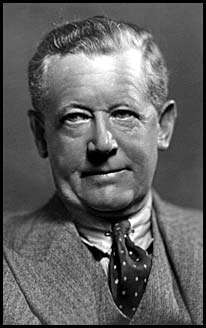

<p><a href="image/obc_portrait.jpeg"></a></p>

<h1 style="text-align: left">Theatrical Adventures</h1>

<p style="text-indent: 0; margin-left: 5%;">Musings and memories of a thespian,
<br>by <a href="http://uk.imdb.com/Name?Clarence,%20O.B.">O.B. Clarence</a> (1870-1956)</p>

<UL>
 <li><a href="prologue.html">Prologue</a></li>
 <li><a href="our_theatre.html">Our Theatre</a></li>
 <li><a href="blossoming_of_a_new_art.html">Blossoming Of A New Art</a></li>
 <li><a href="this_infernal_war.html">This Infernal War</a></li>
 <li><a href="hostels.html">Hostels</a></li>
 <li><a href="touring_the_provinces_in_wartime.html">Touring The Provinces In Wartime</a></li>
 <li><a href="theatrical_literature.html">Theatrical Literature</a></li>
 <li><a href="great_performers_of_the_past.html">Great Performers Of The Past</a></li>
</ul>

